ช่องว่างปริศนา
ระวังข้างหลัง
หลุมยักษ์ทะลุมิติ
แยกมรณะ


แฟ้มรายงานคดี
ฉบับที่1


 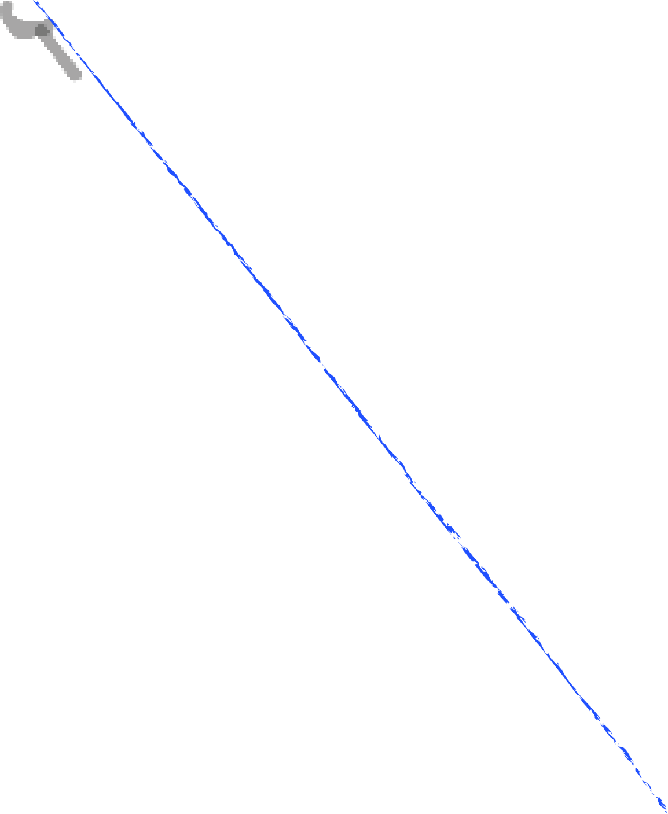
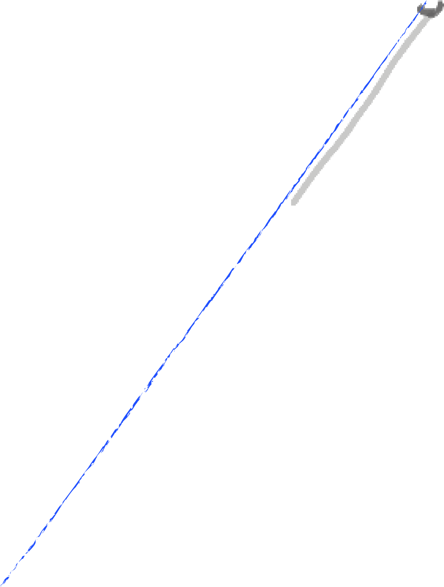
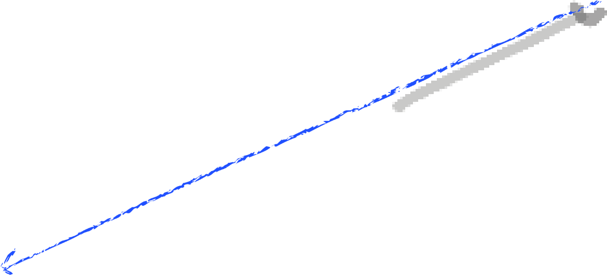
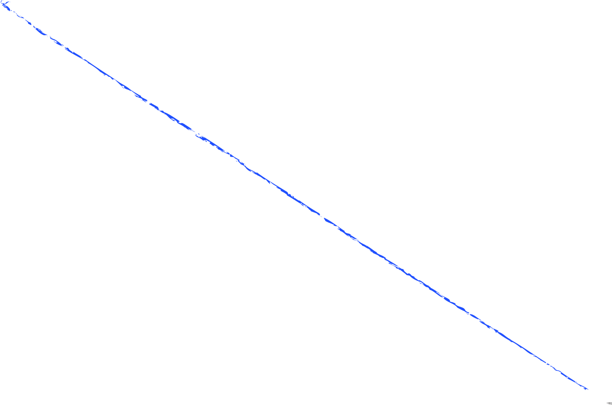
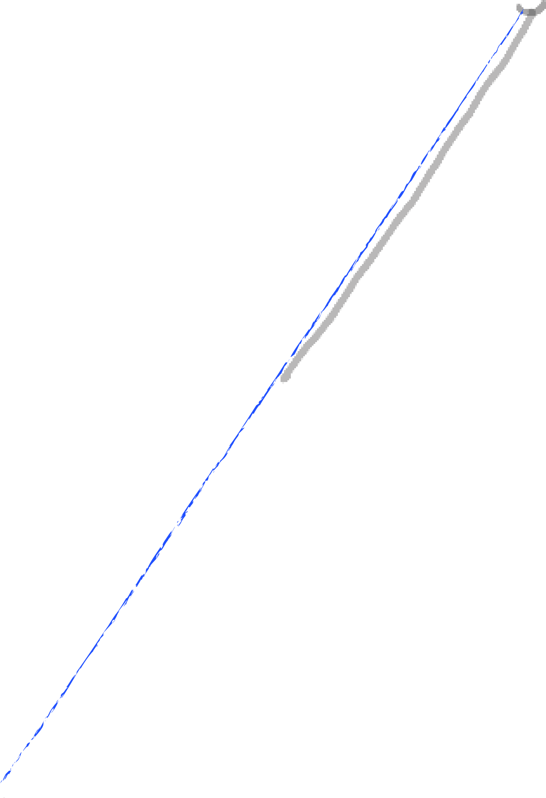
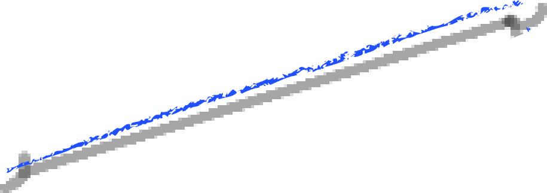
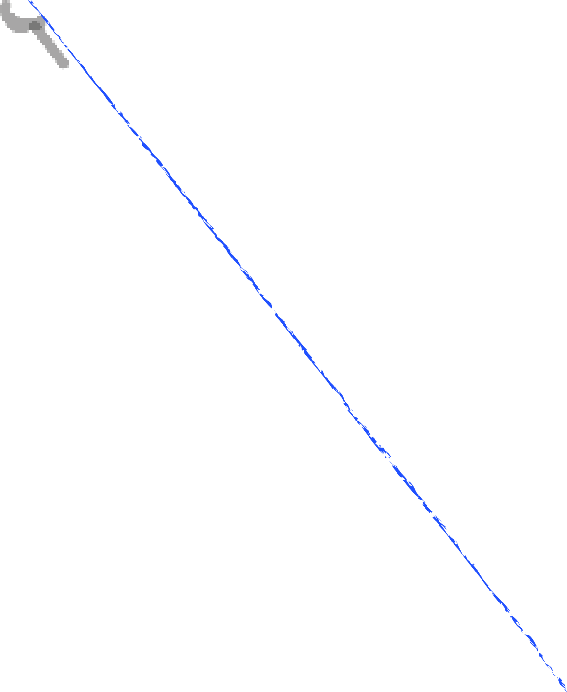
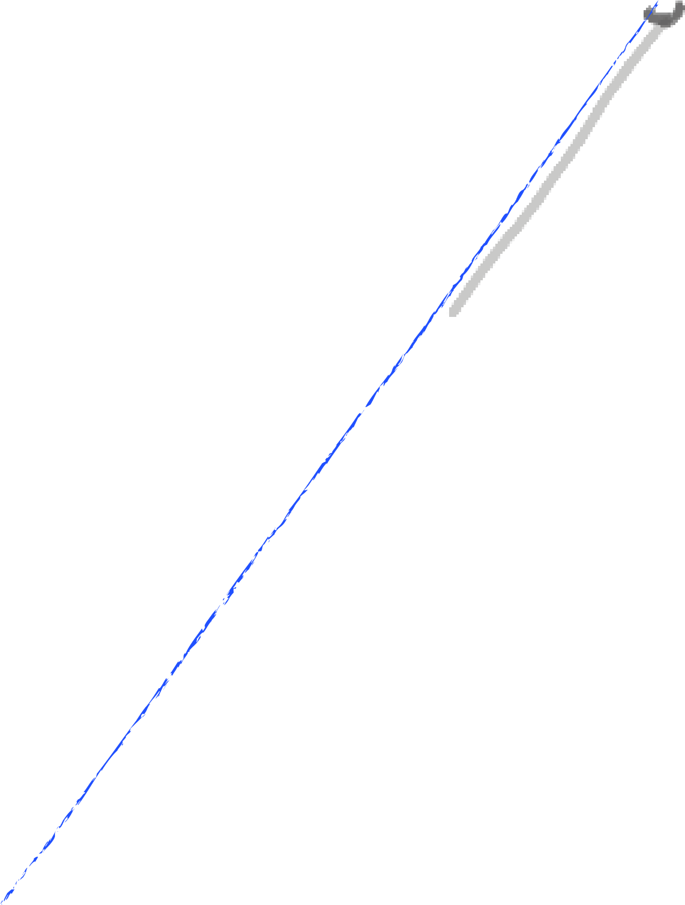
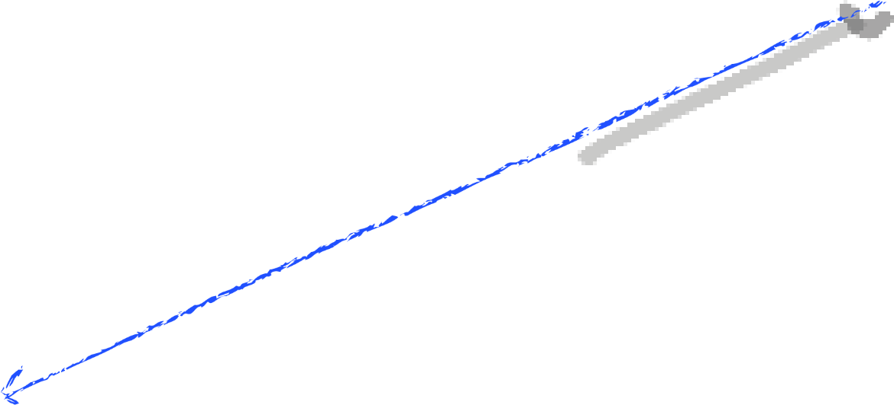
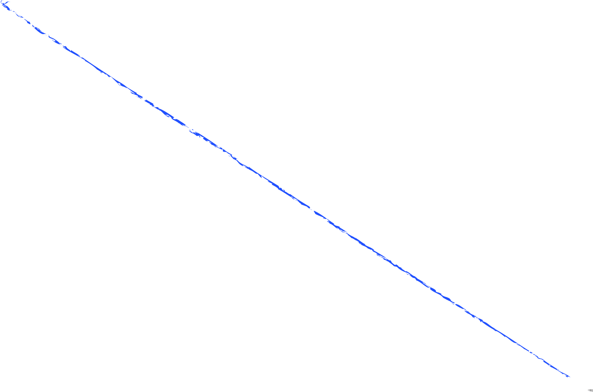
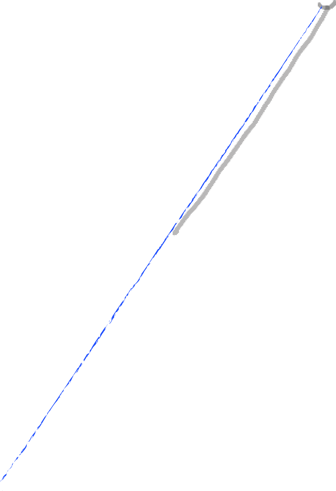
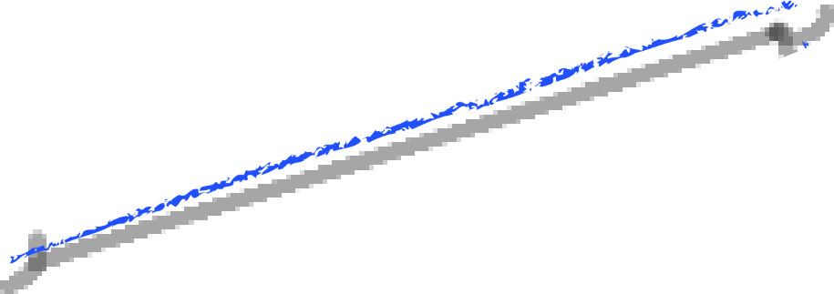


2 ต.ค. 2560 /
ด้านข้างจุฬาลงกรณ์มหาวิทยาลัย
Tanapol Boon-Umpol ผู้ใช้เฟซบุ๊กได้โพสต์ภาพ
รอยแผลถลอก หลังประสบอุบัติเหตุเดินเหยียบแผ่น
ฟุตบาทที่ด้านล่างเป็นโพรง
ใกล้กับป้ายรถเมล์ที่มี
ประชาชนจํานวนมาก หากไม่ได้รับการแก้ไขอาจมีคน
ประสบอุบัติเหตุลักษณะนี้หรืออาจรุนแรงกว่าได้
| เหยื่อ | Tanapol Boon-Umpol (ผู้ใช้เฟซบุ๊ก) |
| สาเหตุ | หินปูพื้นหนึ่งแผ่นหลุดออกข้างใต้เป็นโพรงลึกไม่มีดินอยู่ภายใน |


18 มิ.ย. 2562 / ซ.รัชดาภิเษก
28
พนักงานออฟฟิศหญิงรายหนึ่งกําลังจะเดินไปทํางาน พอเดินมา
ถึงจุดเกิดเหตุฝาท่อได้หักลง
ทําให้หญิงสาวตกลงไปในท่อลึก
ว่า 3 เมตรน้ำท่วมมิดศีรษะ บาดเจ็บที่ขา แขน มือ ไหล่ ครูดลงไป
กับขอบปูน ตามร่างกายมีแผลบวมช้ำ มีพลเมืองดีช่วยเหลือพา
ไปล้างตัวและนําส่ง รพ.เปาโล
ทั้งนี้แม่ค้าแถวนั้นบอกว่าเป็นแบบนี้มานาน เคยแจ้งเขตทราบ
แล้วแต่ไม่ได้มาซ่อมสักที
| เหยื่อ | นางสาว เจตนิพิฐ (พนักงานออฟฟิศ) |
| สาเหตุ | ท่อเปิดฝาปิดด้วยปูนเกิดทรุดตัวลง |


5 ธ.ค. 61 / ซ.โชคชัย 4
เขตลาดพร้าว
ขณะที่นางสุธาสิโนบลกําลังก้าวขึ้นรถสองแถวเท้าของตนได้เหยียบ
ตะแกรงฝาท่อระบายน้ำจนหัก
ขาตกลงไปจนเหล็กครูดขาเป็นแผลยาว
ก้นกระแทกพื้นอย่างแรง ได้ทําการเดินทางมาแจ้งความ เพื่อจะฟ้องร้อง
เรียกค่าเสียหายเป็นเงิน 500,000 บาท เนื่องจากมองว่าชีวิตคนมีคุณค่า
มากกว่าผักปลา มากกว่าเงิน 20,000 บาท ตนอยากให้เป็นกรณีตัวอย่าง
ที่คงไม่มีประเทศไหนที่ประชาชนจะตกท่อแบบนี้
| เหยื่อ | นางสุธาสิโนบล พฤกษาทร |
| สาเหตุ | ฝาตะแกรงท่อระบายน้ำหัก |


14 ธ.ค. 58 / ซอยรัชดาภิเษก 36
ด้านหลัง
มหาวิทยาลัยราชภัฏจันทรเกษม
เรื่องที่ไม่ควรเกิดขึ้นสําหรับคนเดินถนน ในเมืองกรุง
หลังชายหนุ่มรายหนึ่ง ประสบอุบัติเหตุเดินตกท่อ
ระบายน้ำที่ชํารุดในพื้นที่เขตจตุจักร
จนได้รับบาด
เจ็บถูกตะแกรงเหล็กบาดขาขวาเป็นแผลฉีกลึก
ขนาดใหญ่ ต้องเย็บถึง 100 เข็ม
| เหยื่อ | นาย วัชชิระ สวัสดี |
| สาเหตุ | ฝาตะแกรงท่อระบายชำรุด |
จากการสืบสวนผู้ร้ายในคดีปริศนาทั้ง 4 คดี มีจุดที่เชื่อมกันอยู่นั้นคือ
เหยื่อทุกคนถูกกระทําโดยทางเท้าที่ความ
ไร้ประสิทธิภาพทั้งฝาท่อน้ำและตัวทางเท้าเองแต่คนร้ายที่แท้จริงที่อยู่เบื่องหลังเรื่องนี้ นั้นก็คือ
ภาครัฐที่ขาดความรับผิดชอบต่อสังคมส่วนรวม
ผู้รับเหมาหลายราย มีขั้นตอนปฎิบัติที่ไม่เป็นไปตามมาตรฐานทั้งการ
ลงทราย ปรับพื้นที่ และบดอัดพื้นผิว หรือ กรณีการติดตั้งสาธารณูปโภคต่างๆ อย่างไม่มีประสิทธิภาพ
ซึ้งความเสียหายที่พบเห็นในกรุงเทพฯ 70% เกิดจากการก่อสร้างที่ไม่ได้มาตรฐาน


แฟ้มรายงานคดี
ฉบับที่2


10 ก.ย.63 / ลาดพร้าว
ชมรมช่วยเหลือเหยื่ออาชญากรรมได้โพสต์คลิป
ผู้ขับขี่จักรยานยนต์รับจ้าง ทำร้ายร่างกายคน
เดินฟุตบาท และได้ยืนด่าทอชายใส่เสื้อเหลืองด้วย
เสียงดังและหยาบคาย อีกทั้งยังตบหน้า และจิกผม
ชายเสื้อสีเหลืองอีกด้วย ทำให้มีผู้เข้ามาแสดง
ความคิดเห็นกันจำนวนมาก
| เหยื่อ | ชายหนุ่มไม่เอ่ยนาม |
| ผู้ร้าย | วินลาดพร้าว 87 |
28 พ.ค.62 / ย่านบางบอน
พนักงานส่งอาหารกำลังไปขึ้นรถจักรยานยนต์ที่จอดอยู่
ริมถนน คู่กรณีที่ขับย้อนศรบนทางเท้าได้พุ่งมาชน
จนได้รับ
บาดเจ็บสภาพหัวเข่าทั้ง 2 ข้างมีบาดแผลเเตกเเละร่องรอย
ฟกซ้ำไปทั้งตัว
| เหยื่อ | นายธนโชติ กลมเกลี้ย (พนักงานส่งอาหาร) |
| ผู้ร้าย | วัยรุ่นขี่จักรยานยนต์ |
26 พ.ย.61 / ปากซอยลาดพร้าว 69
นักเรียนสาวกำลังเดินกลับบ้าน เมื่อถึงฟุตบาทจุดเกิดเหตุ ตนกำลังก้าว
เท้าขึ้นถูกรถจักรยานยนต์ชนทันที
ตนไม่สามารถหลบได้ทัน ตอนถูกชน
ไม่รู้สึกตัวเเล้ว เบื้องต้นอาการบาดเจ็บมีกล้ามเนื้ออักเสบ ไม่มีกระดูกหัก
โดยเส้นทางที่เกิดเหตุเป็นทางที่ตนเองเดินประจำ และเห็นรถ
จักรยานยนต์ทำแบบนี้บ่อยครั้ง
| เหยื่อ | นางสาวกุลณี จันทรวิทุร (นักเรียน) |
| ผู้ร้าย | นายภูวดล ศรีสำโรง (วินมอเตอร์ไซด์รับจ้าง) |
จากการสืบสวนผู้ร้ายในคดีปริศนาทัง3คดี เราพบคนร้ายชัดเจนเเล้วแต่สาเหตุของพวกเขาทั้งสาม
มีจุดเชื่อมกันนั้นก็คือ พวกเขายังขาดวินัย
ขาดความเข้าใจในการใช้สาธารณูปโภคสาธรณะ
และขาดจิตสำนึกต่อคนในสังคม
แฟ้มรายงานคดี
ฉบับที่3


24 ก.พ. 63 / ถนนเอกมัยฝั่งขาออก ระหว่างซอยเอกมัย 19 - 21
Makarat Snail Taveechon ผู้ใช้เฟซบุ๊กโพสต์ภาพพร้อมเล่าเหตุการณ์
ระหว่างขี่รถจักรยานยนต์ไปตามถนนเอกมัย ได้เจอหลุมขนาดใหญ่โผล่
กลางถนน เกือบหวิดชนท้ายรถกระบะ คาดว่าเกิดจาก ท่อน้ำใต้ดินมีรอย
ร้าวและมีน้ำไหลออกมา ซึ่งขาดการตรวจสอบและถูกสะสมเป็นเวลานาน
ดินด้านล่างจึงเกิดความอ่อนตัวและไม่สามารถรับน้ำหนักได้
| เหยื่อ | Makarat Snail Taveechon (ผู้ใช้เฟซบุ๊ก) |
| สาเหตุ | ท่อน้ำใต้ดินขาดการตรวจสอบ เกิดเป็นรอยร้าวและมีน้ำไหล |
6 ส.ค. 63 / ถนนเพชรบุรี หน้าอาคารวานิชใกล้
แยกด่วนเพชร ก่อนแยกตัดถนนวิทยุ
เวลา 05.00 น.เกิดเหตุหลุมลึกขนาดใหญ่
ขนาดความกว้าง 3 เมตร ยาว 6 เมตร ลึก 1 เมตร
บริเวณถนนเพชรบุรี ใกล้กับอาคารวานิช และ
ทางลงทางด่วนเพชรบุรี ฝั่ งขาเข้า มุ่งหน้าประตูน้ำ
คาดเกิดจากเกิดจากน้ำใต้ดินกัดเซาะเป็นเวลานาน
ในบริเวณใกล้เคียง ส่งผลให้จราจรติดขัด และมี
ผู้ขับขี่รถกระบะตกหลุม
โชคดีไม่มีใครได้รับบาดเจ็บ
| เหยื่อ | ผู้ขับรถสัญจรและผู้ใช้รถกระบะ |
| สาเหตุ | น้ำใต้ดินกัดเซาะถนนเป็นเวลานาน ในบริเวณใกล้เคียง |
6 เม.ย. 63 / หน้าร้านอาหารมิยาซากิ ซอยเอกมัย 2 แขวงคลองตันเหนือ เขตวัฒนา
คนงานบริษัทวางท่อ ชาวเมียนมาร์ ถูกช่วยเหลือจากอุบัติเหตุติดอยู่ภายใต้ถนนที่
เกิดการทรุดตัว ส่งผลให้ได้รับบาดเจ็บสาหัสขณะปฏิบัติหน้าที่ ในขณะที่พนักงานอีก
รายที่ปฏิบัติงานด้วยกันชาวกัมพูชาประสบเหตุเสียชีวิต พบว่าระหว่างใช้รถแบ็คโฮ
ขุดเปิดพื้นผิวถนนเพื่อวางท่อ พื้นข้างล่างซึ่งเป็นโคลนเกิดการยุบตัว
ทําให้สองคนงาน
ที่นําอุปกรณ์ลงไปตัดวัตถุของแข็งที่ก้นบ่อ ถูกดินถล่มทับลงมาทันที
| เหยื่อ | นาย วิน เหว่ย พนักงานวางท่อชาวเมียนมาร์ และ พนักงานวางท่อชาวกัมพูชา |
| สาเหตุ | พื้นข้างล่างถนนเป็นโคลนยุบตัวขณะใช้รถแบ็คโฮขุดเปิดผิวถนนเพื่อวางท่อ |
จากการสืบสวนผู้ร้ายในคดีปริศนาทัง3คดี มีจุดที่เชื่อมกันอยู่นั้นคือ
เหยื่อทุกคนถูกกระทําโดยถนนที่ชํารุด
และ คนร้ายที่แท้จริงที่อยู่เบื่องหลังเรื่องนี้ นั้นก็คือ ภาครัฐที่ขาดความรับผิดชอบต่อสังคมส่วนรวม
ทัง การละเลยการตรวจสอบ หรือความประมาทและผิดพลาดในการปฏิบัติหน้าที่
แฟ้มรายงานคดี
ฉบับที่4


24 ส.ค. 63 / สามแยกสัญญาณไฟแดงปากซอยจรัญสนิทวงค์ 13
เหตุรถเก๋งฮอนด้าของ นางสาว นรินทิพย์ แสงจันทร์ เมาแล้วขับ
ผ่าไฟแดงพุ่งชนรถจักรยานยนต์ทําให้ นางเงาฟ้า แต่งสวน แม่ค้า
ขายข้าวมันไก่ที่กําลังจะไปเปิดร้านซึ่งเป็นผู้โดยสารที่นั่งซ้อนท้าย
เสียชีวิต ส่วนนายประทีป เนียมสุวรรณ วินจักรยานยนต์รับจ้างได้
รับบาดเจ็บก่อนที่อาสาสมัครกู้ภัยนําตัวส่งไปรักษาโรงพยาบาล
ใกล้เคียง
| เหยื่อ | นางเงาฟ้า แต่งสวน (แม่ค้าขายข้าวมันไก่) |
| คนร้าย | นางสาว นรินทิพย์ แสงจันทร์ |
9 ส.ค. 63 / ถนนรัชดาภิเษก ฝั่ งขาเข้า แขวงและเขตจตุจักร
ผู้ขับขี่รถยนต์ชายรายหนึ่ง ได้ขับรถเฉี่ยวชนภายในซอย ได้เรียก
ประกันแต่ไม่สามารถเคลมได้ เพราะเกิดจากการเมาสุราอย่างหนัก
ประกันแนะนําเพียงว่าให้ขับรถด้วยความระมัดระวังและขับตาม
ออกไป สักพัก ชาวดังกล่าวได้ขับรถส่ายไปมา คล้ายกับมีปากเสียง
กับแฟนสาวที่นั่งมาคู่กัน กระทั'งรถเสียหลักชนต้นไม้และเสาไฟฟ้า
ขาด ส่งผลให้ลูกชายที่นั่งมาด้วยกันเสียชีวิต และแฟนสาวได้รับ
บาดเจ็ดสาหัสก่อนเสียในเวลาต่อมา ส่วนตนยังไม่สามารถรับ
เหตุการณ์ที่เกิดขึนได้
| เหยื่อ | นางสาว.ดารัน เจริญศรี (ภรรยา) และ ลูกชาย |
| คนร้าย | นายเชน พรหมจักร (สามีและผู้ขับขี่รถยนต์) |
24 ก.ย. 33 / ถนนเพชรบุรีตัดใหม่ แขวงมักกะสัน เขตราชเทวี
ผู้ขับรถบรรทุกแก๊สวิงลงจากทางด่วนฝ่าไฟแดงเข้าสู่ถนนเพชรบุรีตัดใหม่และจะเลี้ยวขวา
ไปทางสี่แยกมักกะสันได้ประสบอุบัติเหตุชนกับรถยนต์ที่จอดรถรอสัญญาณไฟ
พุ่งเข้าชนตึกแถวริมถนนซึ่งเป็นหอพักสตรีเพชร เกิดแรงกระแทกแก๊สรัวปะทะความ
ร้อนจากระบบ จุดระเบิดเครื่องยนต์ที่จอดอยู่บริเวณนั้นให้ลุกเป็นเปลวไฟ ทําให้
มีผู้เสียชีวิตจากไฟคลอก 89 คน บาดเจ็บ 44 คน รวมค่าเสียหายประมาณ 2,149.2
ล้านบาท ส่วนคนขับรถแก๊สถูกไฟคลอกตายในรถ
| เหยื่อ | ผู้ที่อยู่บริเวณโดยรอบ |
| คนร้าย | นายสุทัน ฝักแคเล็ก (คนขับรถบรรทุกแก๊ส) |
จากการสืบสวนผู้ร้ายในคดีทัง3คดี เราพบคนร้ายชัดเจนแล้วแต่สาเหตุของพวกเขาทั้ง3คนมีจุดเชื่อกัน
นั้นก็คือ พวกเขายังขาดวินัย
ในการใช้รถใช้ถนน และขาดจิตสํานึกต่อคนในสังคม